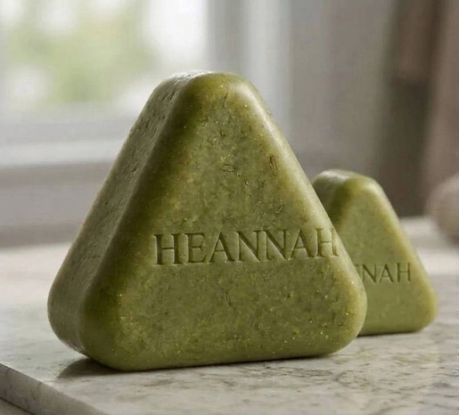
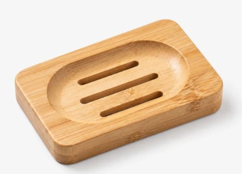

Ton coaching Heannah
8 semaines pour installer le rituel coréen du cuir chevelu.
Étape 1 : ton diagnostic
4 questions, 1 minute. On adapte ta fréquence de lavage et ton massage à tes cheveux.
Faire mon diagnosticCette semaine
DémarrageTa barre
estimationEnviron 24 lavages restants (2 mois à 3 lavages par semaine), si elle sèche bien entre deux usages.
Ton diagnostic
Réponds selon tes cheveux aujourd'hui. Tu pourras refaire le diagnostic à tout moment.
Mouille
1 / 4Ton programme
Ton cuir chevelu a besoin de 4 à 8 semaines pour s'habituer à un lavage sans sulfates. Chaque lavage guidé terminé est compté ici.
Tes badges
Astuces

Faire durer ta barre 2 mois
Toujours sur un porte-savon qui égoutte, hors du jet de la douche, à l'air libre après usage. Une barre qui reste dans l'eau fond deux fois plus vite.

Pourquoi ça mousse moins
Sans sulfates, la mousse est plus légère, surtout au premier lavage. Ça ne veut pas dire que ça lave moins.
Les 5 erreurs à éviter
- Frotter la barre sur les longueurs : ça emmêle et ça gaspille.
- Zapper le massage : sans lui, la mousse n'atteint pas bien la racine.
- Rincer trop vite : rince deux fois plus longtemps que tu n'as massé.
- Laisser la barre dans l'eau : elle ramollit et fond.
- Abandonner après 3 lavages : la transition prend quelques semaines.
Je peux l'utiliser tous les jours ?
Et sur cheveux colorés ?
Je pars en voyage
Mes cheveux sont ternes
Ça ne me convient pas
Une question ? Écris-nous à contact@heannah.com.